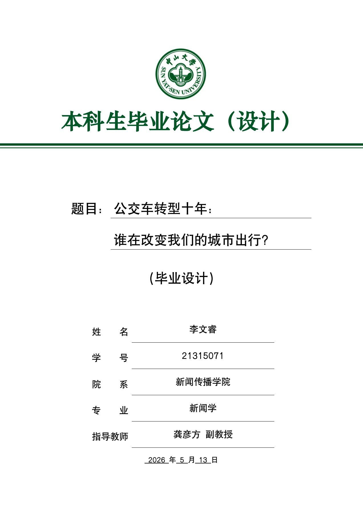

多源资料整理
毕业设计的方法说明记录公开统计、行业公报与政策材料的分类、去重和口径整理。
02 / ANALYSIS / 毕业设计
中山大学新闻学本科毕业设计 · 2026
MY ROLE
我围绕城市公交转型完成选题策划、公开资料整理、半结构化访谈及两篇系列报道，以 Excel 清洗数据，并使用镝数图表和 Datawrapper 完成图表表达。
OVERVIEW
围绕公交新能源转型与客流变化，以行业数据、政策资料和司机、乘客、专家访谈串联两篇报道。项目用数据新闻梳理十年行业变化，用深度报道呈现服务需求、运营困境与公共价值，展示从选题拆解、资料清洗到图表表达和多方求证的完整内容生产过程。
CAPABILITY IN PRACTICE
毕业设计的方法说明记录公开统计、行业公报与政策材料的分类、去重和口径整理。
数据新闻通过图表解释公交保有量、线网、客运量和能源结构等变化。
项目分别以数据新闻呈现宏观趋势，以深度报道呈现司机、乘客与专家所面对的需求和约束。
READ THE COMPLETE WORK
下方展示完整作品，可连续翻页或跳到任意一页。

点击页面可放大查看。阅读器聚焦后可用左右方向键翻页。